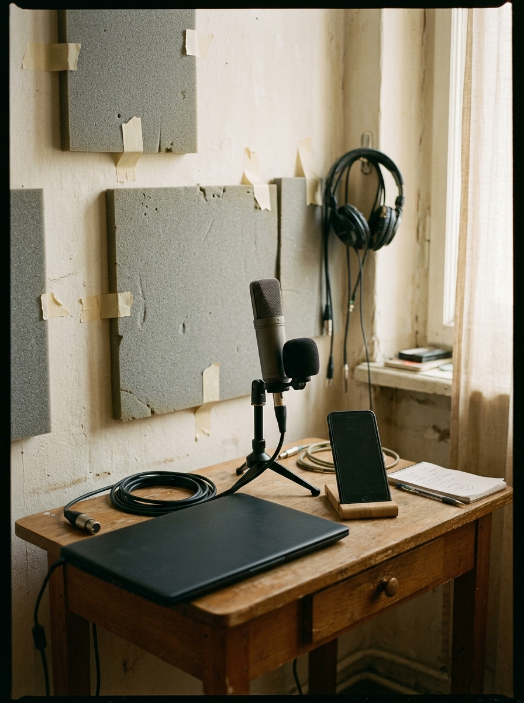

Architecting Flatland
From pedagogical dogma to empirical engineering — operationalizing the Cabal for English pronunciation curriculum R&D.
Contents
The evidence
Five decades of organizational sociology, twenty-five years of Valve production history, and thirty days of our own.
Out of the honeymoon
Month 1 is complete. What comes next is not more freedom — it is more discipline: explicit protocols, peer transparency, and learner data as the arbiter.
The Phase 2 threshold
- Month 1 retrospective. Team calibration, phonological scoping, first real peer collaboration.
- The Phase 2 mandate. Exploratory conversation becomes an industrial-grade production engine.
- The false dichotomy. Flat does not mean the absence of structure. It demands more discipline, not less.
- The evidence base. Freeman, Barker, Edmondson, Tuckman, Laloux — and Valve’s own production record.
Month 1, in three questions
The permission reflex
Did you catch yourself waiting for permission, or waiting for someone else to tell you what to work on?
The phantom guilt
Did you worry whether you’re doing enough, because there is no boss to judge or evaluate your work?
The politeness trap
Did you hold back honest feedback, worried you might hurt feelings or cause tension?
These are documented, predictable human responses to the removal of traditional hierarchy — not a sign that anyone here is broken, lazy or disorganized.
The Valve blueprint
Desks on wheels
Contributors do not wait for assignments. They roll the desk to the highest-leverage bottleneck in the curriculum.
The T-shaped teacher: deep vertical craft — articulatory mechanics, lesson design, audio prompting — over broad literacy in learner feedback and cognitive load.
Three documented traps
Structure happens (p. 16). Removing official bosses does not abolish hierarchy; informal leadership emerges instantly and hardens if unwatched.
Hours (p. 17). Overtime is a symptom of broken planning, not heroism.
Stack ranking (pp. 26–33). Peer grading bred risk aversion and popularity contests. We reject it outright.
There is no such thing as a structureless group
- 1Explicit delegation — specific tasks to specific people, by transparent procedure
- 2Direct responsibility — delegated authority answers to the whole group
- 3Distribution of authority — no one monopolizes the syllabus
- 4Rotation of tasks — facilitation and other visible roles move around
- 5Rational allocation — by demonstrated craft, never by popularity
- 6Diffusion of information — real-time access to every metric, no back channels
- 7Equal access to resources — audio suites, software, test cohorts
Striving for structurelessness only masks power, transferring it to informal elites.
“There is a pseudo-structure… it felt like high school where popular kids wielded absolute power, and if you weren’t in their clique, your project starved.”
Rich Geldreich’s post-mortem adds the mechanism: without formal leads, informal power brokers lobby behind closed doors, and the safest career move is to work on whatever the most popular veteran is doing. We must protect technical merit over social seniority.
The iron cage, tightened from within
The bureaucratic cage
Authority is visible, rule-bound and appealable. You can dismiss a manager’s criticism as bureaucratic ignorance.
The concertive cage
Self-managing teams developed peer consensus more rigid and intrusive than any supervisor: continuous anxiety, chronic guilt, self-policed overwork.
Psychological safety
Autonomy raises interpersonal risk. Without explicit role boundaries, fear of peer rejection produces defensive silence.
Vocal modeling and accent work expose deep personal vulnerability. Feedback here must be decoupled from personal worth by design, not by good manners.
The Cabal method
One room, several crafts, one module at a time — and a learner in the chair before lunch.

One table, four disciplines
No linguist throws a syllabus draft over a wall to a lesson writer who emails a script to a voice coach. The handoffs are deleted, not optimized.
The pivot that made the method
The fifth day was deliberately kept free of group meetings: solo drafting, asset work, recovery. Everything agreed went into one living document — if an idea was not in the Bible, it did not exist.
“Player confusion is one hundred percent the fault of the designer, never the user.”
Translated: when a learner finishes our module on aspiration and still fails to aspirate the /p/ in pack, that is diagnostic proof our cross-section was ambiguous, our reference audio lacked contrast, or our discrimination scaffold failed. If an exercise needs a live teacher in the room to explain it, the exercise is broken.
Four veterans, four lessons
Build, don’t debate
Debating committees are the death of flat organizations. The only way to resolve conflicting opinions is to stop talking and put an executable prototype on the screen.
The lead is a janitor
Leads do not issue orders or approve work. They remove roadblocks, manage hardware, schedule playtests and protect creative flow.
Audio is not varnish
Acoustic design cannot be pasted onto finished visuals. It is engineered from day one as a primary cognitive driver — and here it is the product itself.
Ego surrender
Writers sat in silent playtests. If a line failed to communicate its clue, it was rewritten on the spot — never defended.
Tension, not length
For /iː/ in sheep, the lips stretch into a smile and the tongue is high and tense. For /ɪ/ in ship, the jaw drops slightly and the cheeks relax. Learners fail because textbooks describe duration; the mouth is doing something else entirely.

One morning, one module
| Time | Who | What happens |
|---|---|---|
| 09:00 | Four teachers | One table, Module 04 — /iː/ vs. /ɪ/ |
| 09:15 | Pronunciation lead | Diagnoses the root cause: mouth tension and jaw drop, not vowel length |
| 09:45 | Lesson designer | Builds the motor drill: smile tension vs. jaw drop, then a 3-second listening contrast |
| 10:30 | AI audio prompter | Generates the pair in two minutes, then runs the Blind Ear Test — 10 out of 10 |
| 11:15 | Playtest coordinator | A real learner masters the contrast in four minutes |
| 12:00 | The Cabal | Module 04 validated and committed to the Living Bible |
The 24-hour playtest rule
Three hours, no decision
Two experienced teachers argue in a conference room, pull conflicting papers off the shelf, appeal to classroom tenure, and leave exhausted and deadlocked.
Fifteen minutes, then build
Verbal debate is capped at 15 minutes. Both proponents build a functional five-minute micro-lesson within 24 hours.
Three ESL learners run both, in randomized order, under silent observation. Faster comprehension, better acoustic accuracy and fewer motor stalls wins and enters the Bible.
Let the learner’s vocal tract resolve the disagreement, not teacher rhetoric.
Silence behind the learner
Watch, write, say nothing. Hesitation markers, replays and wrong selections are the data. The temptation to lean in and explain is the single thing that destroys a playtest.
Decisions without bureaucracy
Anyone can decide anything
No approval sign-offs. But before acting you must consult, first, the qualified domain experts — the phonetician on IPA, the audio specialist on acoustics — and second, the people who must execute or live with the decision.
Advice is not consensus. Advisors hold no veto. You weigh the counsel, make the call, log it in the Bible, and own the outcome completely.
Three tiers, then binding
Tier 1 — direct one-to-one resolution within 24 hours.
Tier 2 — a neutral peer mediator, chosen by both parties, within 48 hours.
Tier 3 — a three-person peer panel reviews the playtest evidence and issues a binding determination.
Phase 2 execution
Twelve weeks. Two learner gates. One standard of progress.
50
Core interactive pronunciation modules — vowel contrasts, consonant pairs, rhythm and sentence stress — engineered, playtested and validated in twelve weeks.
The twelve-week roadmap
Progress is validated learning, not activity: can a learner complete a module and demonstrate clear auditory discrimination and accurate production, verified by voice-to-text, within 48 hours?
Forming to storming
Forming
Polite orientation and artificial harmony. Appropriate for onboarding, useless for production.
Storming
Friction over pedagogical boundaries, standards and workload. Not dysfunction — the mandatory negotiation of real standards.
Norming
Explicit social contracts replace unspoken assumptions. The Bible starts settling arguments before they begin.
Performing
Fluid execution. Disagreement resolves through prototypes inside a day.
The lead is a shield, not a crown
Roadblock removal
Software, recording equipment and workspace friction cleared within hours, not sprints.
Advice-process facilitation
Making sure decision-makers actually consulted the experts and the people downstream.
Playtest logistics
Sourcing learners, booking observation rooms, curating the error telemetry.
A Cabal lead has no authority to mandate pedagogy or dictate syllabus content. Leadership rotates with the sprint’s problem domain — you step forward when your craft is on the line and step back when another specialist takes the floor.
Classroom monarch to curriculum engineer
| The classroom monarch | The curriculum engineer | |
|---|---|---|
| Authority | Sovereign behind a closed door | Peer-reviewed in the open |
| Method | Charisma and live improvisation | Modular scaffolding, foolproof at 2 a.m. |
| Evidence | Reading the room | Learner telemetry and acoustic benchmarks |
| On failure | The student did not practise | The scaffold was ambiguous |
Our worth is no longer measured by how much students like us, but by how reliably our materials produce acoustic mastery without us in the room.

The acoustic director’s desk
We engineer curriculum audio with speech synthesis rather than recording ourselves. When a colleague critiques a file, nobody feels personally attacked — it is an asset, not a voice. That removes vocal insecurity from peer review entirely.
Three filters against synthetic slop
The Blind Ear Test
Play the audio to a teammate with eyes closed and no text on screen. Can they identify the target word 10 out of 10 times without guessing?
Speech-to-text stress test
Play it into phone dictation. If recognition hears sheep when the model said ship, the sound is not distinct enough.
Learner mimicry check
Put it in front of a real learner. If they cannot hear the difference and repeat it back, re-prompt and try again.
AI removes teacher vocal insecurity. It does not remove the need for rigorous human verification — in a Cabal, we are the acoustic directors.
The social contract
How we critique, how we work, and where the day ends.
Nothing can be cool, and nothing can suck
Behavioral observation
What happened, not what you felt: “In playtest 2 the learner replayed the prompt three times and hesitated seven seconds before answering.”
Root-cause diagnostic
“The /p/–/b/ contrast was unclear because the audio produced no crisp puff of air — pat sounded like bat.”
Actionable proposal
“Re-prompt with an aspirated phonetic tag, and add a tissue-paper drill so the learner sees the puff of air.”
Compassionate and straightforward, never harsh — and never a verdict on the person who made it. Treat lesson scripts as functional cues: if the learner stumbles, rewrite the prompt.
What you can and cannot expect
Complete autonomy to decide within your Cabal, through the Advice Process.
Transparent access to all learner telemetry, acoustic benchmarks and project files.
Objective, behavioral feedback on your materials within 24 hours.
Fierce protection of your boundaries and your rest.
A manager handing you a daily checklist or counting your hours.
Consensus committees where everyone must agree before you may act.
Freedom to ignore playtest data or bypass the Advice Process.
Tolerance for passive aggression or back-channel politics.
Monday to Thursday, 10:00 to 17:00 — six hours of Cabal work. Friday is solo drafting, quiet testing and recovery, with zero group meetings. No evening or weekend messaging.
The fifth day
Overtime is a symptom of broken planning, not heroism. If we are working late, our predictions failed — and that is a planning problem to fix, not a virtue to reward.
The Phase 2 charter
- We have discarded the illusion of structurelessness and armed ourselves with verified organizational science instead.
- We resolve pedagogical conflict through learner prototypes, not rhetorical filibustering.
- We lead by serving — clearing obstacles, holding peer safety, rotating the floor to whoever’s craft is on the line.
- Cabal assignments and pod workspaces go live this afternoon. Week 1: draft the Living Syllabus Bible and build the first Alpha prototypes.

Let’s get to work
Vocal clarity, acoustic precision and communicative confidence — engineered, proven by learner data, and shipped.